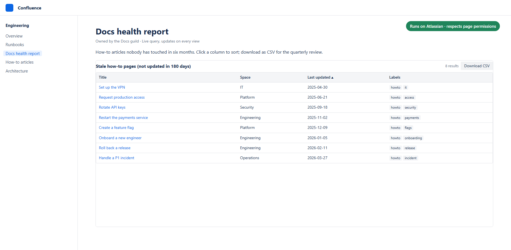
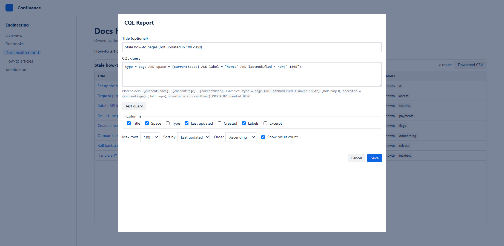

CQL Report for Confluence
Turn any Confluence query (CQL) into a live, sortable table with CSV export. Runs on Atlassian.

Add a report to a page
- Edit a page, type
/CQL Reportand press Enter. - Enter a CQL query and click Test query to check how many results it returns.
- Choose columns, sort order and maximum rows, then Save and publish.

Placeholders
| Placeholder | Replaced with |
|---|---|
{currentSpace} | The key of the space the page is in |
{currentPage} | The ID of the page the macro is on |
{currentUser} | The person viewing the page |
Need a query? Try the free CQL query builder with copy-ready recipes.
Useful queries
| Report | CQL |
|---|---|
| Stale pages in this space | type = page AND space = {currentSpace} AND lastmodified < now("-180d") |
| Pages with a label | type = page AND label = "howto" |
| All child pages | ancestor = {currentPage} |
| My recent work | contributor = {currentUser} AND lastmodified > now("-30d") |
| Attachments in this space | type = attachment AND space = {currentSpace} |
See Atlassian's CQL reference for every field and operator.
Permissions and privacy
Each search runs as the person viewing the page, so people only see results they already have access to. The app stores nothing and makes no external calls; it is eligible for Runs on Atlassian.
Limits
- Up to 1,000 rows per report (loaded 50 at a time).
- CSV export contains the rows currently loaded, in the current sort order.
Release notes
1.0.0: First release: CQL query reports with sorting, placeholders and CSV export.